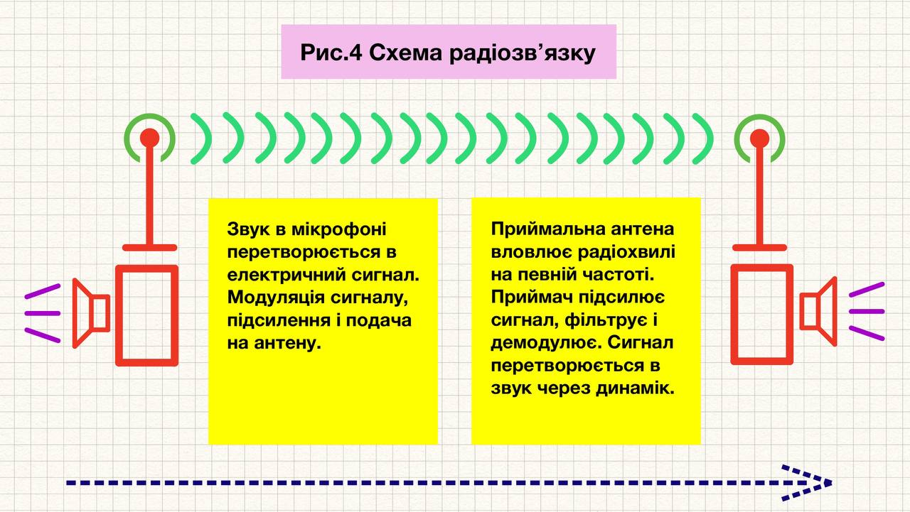
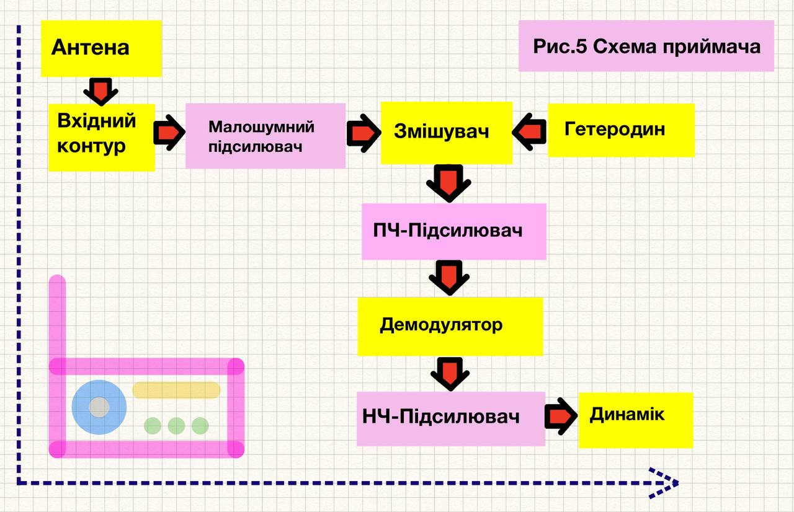

Що таке Радіозв'язок
Вступ: ціль статті доступно пояснити як працює радіозв’язок — від виникнення сигналу до його прийому й відтворення. В статті максимально коротко викладено основні поняття і дано декілька простих схем.
Радіозв'язок — це технологія(спосіб) передачі інформації через електромагнітні хвилі (радіохвилі) в радіочастотному діапазоні. Весь процес базується на відкритті Максвелла про те, що змінні електричні струми створюють електромагнітні поля, які поширюються у просторі. Ключові моменти циклу: Звук перетворюється в електричний сигнал, який потім модулюється у високочастотну несучу хвилю - це дозволяє “підняти” низькочастотний аудіосигнал до частот, які ефективно випромінюються антенами.
Антени як перетворювачі: Передавальна антена перетворює електричну енергію в електромагнітні хвилі, а приймальна виконує зворотний процес. Обробка в приймачі: Найскладніша частина - це селекція потрібного сигналу серед тисяч інших і демодуляція для відновлення оригінального звуку. Еволюція від простих AM передач до цифрових систем показує як технологія постійно вдосконалюється для підвищення якості та ефективності передачі інформації.
Радіозв’язок — це процес передачі інформації через електромагнітні хвилі в радіочастотному діапазоні. Нижче описано повний цикл роботи радіозв’язку, включаючи виникнення сигналу, його обробку, передачу, прийом та відтворення звуку.
1. Виникнення сигналу
Радіозв’язок починається з перетворення інформації (наприклад, голосу, музики чи даних) в електричний сигнал. Це відбувається так:
• Джерело інформації: Наприклад, мікрофон перетворює звукові коливання (голос) в електричний сигнал. Звукові хвилі викликають вібрацію мембрани мікрофона, яка генерує змінний електричний струм, що відповідає амплітуді та частоті звуку.
• Модуляція: Щоб передати цей сигнал на великі відстані, його накладають на високочастотний сигнал-носій. Це називається модуляцією. Існують основні типи модуляції:
• Амплітудна модуляція (AM): Амплітуда носійного сигналу змінюється відповідно до інформаційного сигналу.
• Частотна модуляція (FM): Частота носійного сигналу змінюється відповідно до інформаційного сигналу.
• Фазова модуляція (PM) та інші цифрові види модуляції (наприклад, QAM) для даних.
Цей модульований сигнал готовий до передачі.
Схематичний цикл роботи радіозв’язку(радіопередачі)
(*Якість зв'язку залежить від кожного етапу цього процесу):
1. Звук → Мікрофон → Електричний сигнал.
2. Сигнал модулюється на носій → Підсилюється → Подається на антену.
3. Антена випромінює радіохвилі.
4. Радіохвилі поширюються в просторі.
5. Приймальна антена вловлює сигнал на певній частоті.
6. Приймач підсилює, фільтрує, демодулює сигнал.
7. Сигнал перетворюється в звук через динамік.
### РИС_1 — розписати повний план

#### 1. Виникнення сигналу — ПОЧАТОК
Все починається з інформаційного сигналу, у нашому випадку це голос — він є низькочастотним (до кількох десятків кГц) і не може ефективно передаватися на відстань.
Джерело інформації перетворюється мікрофоном у електричний сигнал. Дані якщо це текст або зображення кодуються в електричні імпульси.
Звукові хвилі викликають вібрацію мембрани мікрофона, яка генерує змінний електричний струм, що відповідає амплітуді та частоті звуку,
мікрофон перетворює звукові коливання в електричний сигнал.
### РИС_2 — житт цикл сигналу.

Радіозв’язок починається з перетворення інформації в електричний сигнал.
• Модуляція: Щоб передати сигнал на відстані, його накладають на високочастотний сигнал-носій. типи модуляції:Амплітудна модуляція (AM): Амплітуда несучої хвилі змінюється пропорційно до амплітуди інформаційного (низькочастотного) сигналу. Частота та фаза при цьому залишаються незмінними. Частотна модуляція (FM / ЧМ): Частота несучої хвилі змінюється відповідно до інформаційного сигналу. Амплітуда і фаза залишаються сталою. Фазова модуляція (PM): Фаза несучої хвилі змінюється відповідно до миттєвого значення інформаційного сигналу. (Не до амплітуди напряму!) Частота та амплітуда при цьому залишаються незмінними. PM і FM тісно пов’язані: одна може бути отримана з іншої математично.
. Є інші цифрові види модуляції (для сучасних систем, QAM, OFDM) для даних. змінюється фаза .TABLE_1. Підсилювач потужності: Підсилює модульований сигнал до рівня достатнього для передачі на великі відстані.
## 1. Виникнення сигналу — КІНЕЦЬ
2. Роль антени в передачі сигналу — ПОЧАТОК
Антена перетворює електричний сигнал у радіохвилі та навпаки. Антена — це провідник, який резонує на певній частоті. ключовий компонент для передавача і приймача. Електричний струм, що проходить через антену, створює змінне електромагнітне поле, яке випромінюється у вигляді радіохвиль. Форма, розмір і конструкція антени визначають її ефективність і спрямованість це залежить від діапазону частот (наприклад, для FM-радіо — 88-108 МГц). Типи антен: Дипольні антени (прості, для радіомовлення) - випромінює сигнал у всіх напрямках. Спрямовані антени (для точкового зв’язку) - фокусує енергію в одному напрямку. Параболічні антени (для супутникового зв’язку). Частота сигналу відповідає резонансній частоті антени. ## IMGS_4 .
Випромінювання антеною - Змінний струм у антені створює електромагнітне поле яке поширюється від антени у просторі(?) Ключові параметри: Резонансна частота (залежить від довжини антени: λ/4, λ/2 - кратну довжині хвилі), Коефіцієнт посилення (дБі), Діаграма спрямованості? Ефективність ≈ 80-95% для правильно розрахованих антен?
У передавачі антена: Перетворює електричний сигнал в електромагнітні хвилі і випромінює їх у простір (створене змінне електромагнітне поле коливає електрони в антені, що спричиняє випромінювання радіохвиль) оптимізує випромінювання енергії, спрямовуючи її в потрібному напрямку..Передача сигналу: Модульований електричний сигнал подається на передаючу антену через передавач (трансмітер).Ефективність залежить від узгодження антени з частотою сигналу та опором передавача.
У приймачі антена: Приймає електромагнітні хвилі з простору і перетворює їх назад в електричний сигнал (Радіохвилі що досягають антени, викликають коливання електронів — електричний сигнал, який подається в приймач). вловлює максимальну кількість енергії від радіохвиль, щоб сигнал був достатньо сильним для обробки.
2. Роль антени в передачі сигналу — ПОЧАТОК
3. Робота передавача (трансмітера) — ПОЧАТОК
Мікрофон або джерело сигналу- Перетворює звук у електричний сигнал.
Модуляція - сигнал “накладається” (модулюється) на високочастотну несучу хвилю, яку генерує осцилятор.
Підсилення сигналу - Слабкий модульований сигнал підсилюється за допомогою підсилювача потужності.
Антена-передавач - Перетворює елек коливання у радіохвилі, які випромінюються в простір. випромінює модульований сигнал у простір.
радіопередавач складається з кількох основних блоків:
Компонент
Функція
Генератор
Створює несучу хвилю
Модулятор
«Накладає» інформацію на несучу
Підсилювач потужності
Робить сигнал досить сильним
Фільтри
Видаляють сторонні частоти (гармоніки)
Антена
Випромінює сигнал в ефір
### РИС_2 — житт цикл сигналу ???
1. Модуляція (ключовий процес):
- Носійний сигнал: Високочастотна синусоїда (наприклад, 100 МГц)
2. Підсилення: Потужність збільшується до десятків/сотень ват, Використовуються ВЧ-підсилювачі на транзисторах або лампах
—-Передавач формує та підсилює сигнал для передачі через антену:
1. Генерація носійного сигналу: Осцилятор (наприклад, кварцовий) генерує стабільний високочастотний сигнал (носій).
2. Модуляція: Інформаційний сигнал (з мікрофона чи іншого джерела) накладається на носій за допомогою модулятора. Модулятор - Змішує інформаційний сигнал з високочастотним несучим сигналом.
3. Підсилення: Підсилювач потужності (зазвичай транзисторний або ламповий) підвищує амплітуду сигналу, щоб він міг бути переданий на велику відстань.
4. Фільтрація: Фільтри усувають небажані гармоніки чи шум, щоб сигнал відповідав стандартам частотного діапазону.
5. Передача в антену: Підсилений модульований сигнал подається на антену, яка перетворює його в електромагнітні хвилі. ### РИС_4..
3. Робота передавача (трансмітера) — КІНЕЦЬ
4. Поширення радіохвиль —- ПОЧАТОК
Трансмітери: Це пристрій, який генерує, модулює і передає радіосигнал. Він складається з генератора, модулятора, підсилювача потужності і антени.
- Робота трансмітера: Генератор створює високочастотний несучий сигнал. Модулятор змішує інформ-сигнал з несучим сигналом. Підсилювач потужності підсилює модульований сигнал до рівня, достатнього для передачі на великі відстані.
– Після випромінювання антеною радіохвилі поширюються в просторі зі швидкістю світла (близько 300,000 км/с).
• ПроцесиМеханізми. радіохвилі можуть: Поширюватися прямою видимістю (наприклад, у VHF/UHF(УКХ/ДМ) діапазонах). Відбиватися від іоносфери (у HF(КХ) діапазоні, для далекого зв’язку(довгі/середні хвилі)). Огинати перешкоди або зазнавати заломленням, дифракції навколо перешкод, залежно від частоти. Дифузія (тропосферне поширення) Поверхнева хвиля (ДВ/СВ)
• (Вплив середовища. може зробити з цього таблицю) На якість сигналу впливають: Перешкоди (шум від інших пристроїв, природні явища). Загасання з відстанню,Затухання (через відстань, перешкоди, атмосферні умови). Рефракція в атмосфері — це явище відхилення траєкторії радіохвиль від прямолінійного поширення через зміни швидкості їхнього проходження в різних шарах атмосфери, через неоднорідність атмосфери, яка залежить від температури, вологості, тиску та концентрації газів, що впливають на показник заломлення. Інтерференція (взаємодія хвиль). Радіоприймачі борються з шумами за допомогою фільтрів і підсилювачів.
### РИС_4

4. Поширення радіохвиль —- КІНЕЦЬ
## 5 Обробка сигналу в радіоприймачі — ПОЧАТОК
Приймальна антена має бути налаштована на частоту сигналу для ефективного прийому (резонанс). Антена приймача вловлює електромагнітні хвилі(радіохвилі), які індукують у ній слабкий електричний струм, радіохвилі і перетворює їх в слабкий електричний сигнал. Прийом сигналу антеною - Зворотний процес до того який був у передавачі: ЕМ-хвиля індукує ЕРС у антені. Напруга пропорційна напруженості поля(?)
Чутливість: Типові рівні сигналу: мікровольти, Вплив шумів: атмосферні, промислові, теплові(?)
# РИС_3 — радіоприй##

- Приймач: Обробляє прийнятий сигнал для відновлення оригінальної інформації.Вхідний контур (тюнер) Вибирає потрібну частоту і фільтрує інші.
- Фільтрація: Видаляє небажані частоти і шуми з сигналу.
- Підсилювач: Підсилює демодульований низькочастотний сигнал до рівня, достатнього для подальшої обробки(електричний сигнал назад у звук? для динаміка?).
- Демодуляція: Відновлює інформаційний сигнал з модульованого сигналу.
- Декодування: Перетворює інформаційний сигнал в форму, зрозумілу для користувача.
- Демодулятор відновлює інформаційний сигнал з модульованого сигналу. Детектор/Демодулятор виділяє з високочастотного сигналу інформацію (звук).
- Динамік: Перетворює електричний сигнал назад в звук або іншу форму інформації.
5. Обробка сигналу в радіоприймачі — КІНЕЦЬ
7(8). Робота простих радіоприймачів —- ПОЧАТОК
1. Супергетеродинна схема (99% сучасних приймачів. визначення у фай теми):
- Змішувач: Сигнал антени + сигнал гетеродину → проміжна частота (ПЧ)
- Переваги: Стабільне підсилення, добра вибірковість
- Типова ПЧ: 455 кГц (АМ), 10.7 МГц (ЧМ)
2. Демодуляція: АМ: Діодний детектор. ЧМ: Частотний детектор (дискримінатор). Цифрова: DSP-процесори (перетворення Фур'є, фільтрація)
3. Відновлення сигналу: Підсилення НЧ, Фільтрація зайвих частот. Автоматичне регулювання посилення (АРП).
У простих приймачах (як AM/FM радіо) цей процес виглядає так:
1. Підсилення вхідного сигналу: Слабкий сигнал від антени підсилюється за допомогою високочастотного підсилювача (RF-підсилювач), щоб зменшити вплив шумів.
2. Налаштування на частоту: Тюнер (змінний конденсатор або електронний контур) вибирає потрібну частоту сигналу, відфільтровуючи інші.
• У супергетеродинних приймачах (найпоширеніший тип) сигнал змішується з сигналом від локального осцилятора, щоб отримати проміжну частоту (IF), яка легше обробляється.
3. Фільтрація:
• Фільтри проміжної частоти усувають небажані сигнали та шум, залишаючи лише потрібний сигнал.
4. Демодуляція: Демодулятор витягує інформаційний сигнал із модульованого носія:
Для AM: детектор амплітуди (наприклад, діодний) виділяє низькочастотний звуковий сигнал. Для FM: частотний детектор (наприклад, фазовий дискримінатор) відновлює сигнал, аналізуючи зміни частоти. На виході демодулятора отримуємо аналоговий звуковий сигнал.
5. Підсилення звуку: Низькочастотний підсилювач (аудіопідсилювач) підвищує потужність сигналу для динаміка. Динамік перетворює електричний сигнал назад у звукові коливання, які чує людина. Відтворення Аудіо інформації: - Підсилений сигнал → динамік → звукові коливання.
— Прості радіоприймачі (наприклад, кристадин або детекторний приймач) мають спрощену конструкцію: - Детекторний приймач: Складається з антени, контуру (котушка + конденсатор) для вибору частоти, діода (або кристала) для демодуляції та навушників. Не потребує зовнішнього живлення, оскільки сигнал від антени достатньо сильний для роботи навушників. Використовується лише для AM-сигналів, оскільки FM складніше демодулювати без підсилення.
- Супергетеродинний приймач: Сучасніший, використовує проміжну частоту для кращої селективності та чутливості. Широко застосовується в AM/FM радіо, телевізорах і сучасних комунікаційних системах.
Додаткові аспекти. .Цифровий радіозв’язок: У сучасних системах (наприклад, DAB, SDR) сигнал оцифровується, обробляється процесорами, що забезпечує кращу якість і стійкість до перешкод. Двосторонній зв’язок: У системах типу рації (walkie-talkie) один пристрій поєднує передавач і приймач (трансивер), що дозволяє як передавати, так і приймати сигнали. (блютуз . тв . інет . вайфай)
7(8). Робота простих радіоприймачів —- КІНЕЦЬ

Фраку.
Висновок: Фізичні основи родіозвязку.Рівняння Максвелла: Описують генерацію ЕМ-полів
Закон Ленца-Фарадея: Пояснює індукцію сигналу в антені.Теорема Шеннона: Визначає максимальну швидкість передачі.
Всі одиниці вимірювання та їх суть і значенняа а також більш детальний розбір інших процесів радіозвязку, планую викласти в наступних статтях.